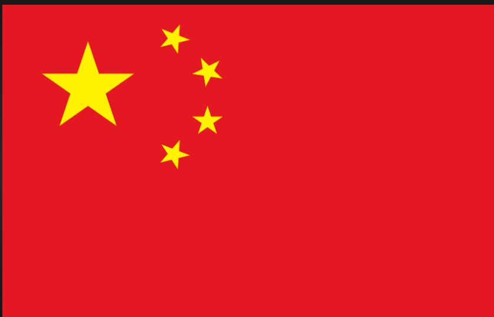
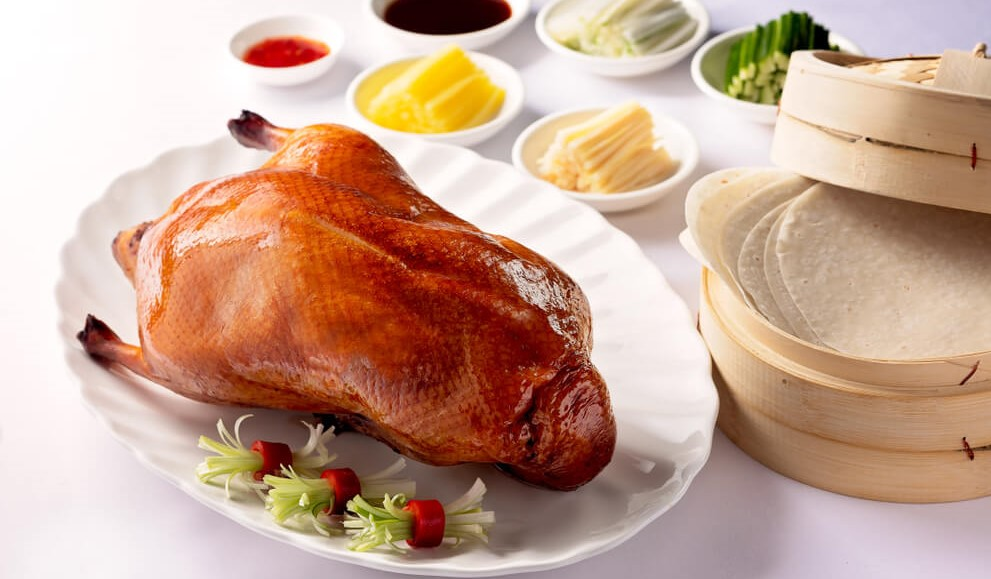

Welcome to People's Republic of China
Location
East Asia
China is located in East Asia, bordered by the Pacific Ocean on its east coast and by 14 countries, including Russia, Mongolia, and India.
DePauw Students
Chinese students composes 2.34% student body of DePauw students
Top 2 Cuisines
Peking Roasted Duck
Peking duck (北京烤鸭 Běijīng kǎoyā) is a famous dish from Beijing, enjoying world fame, and considered as one of China national dishes. Peking duck is savored for its thin and crispy skin. Sliced Peking duck is often eaten with pancakes, sweet bean sauce, or soy sauce with mashed garlic. It is a must-taste dish in Beijing!
Dim Sum

Dim sum (点心 diǎnxin) is one of the most popular Cantonese cuisine dishes. It contains a large range of small dishes, including dumplings, rolls, cakes, and meat, seafood, dessert, and vegetable preparations. There are more than one thousand dim sum dishes in existence today.